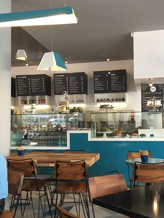

La lonchería de peltre se refiere a un tipo de establecimiento o negocio que ofrece comida rápida o comida casera en un ambiente informal y acogedor, utilizando utensilios y vajilla de peltre. El peltre es una aleación metálica que se compone principalmente de estaño y otros metales como cobre, antimonio o plomo.
En una lonchería de peltre, los clientes pueden encontrar una variedad de platillos típicos de la cocina local o regional, como tacos, tortas, enchiladas, sopas, guisados, entre otros. Estos establecimientos suelen ser populares por ofrecer alimentos caseros y tradicionales a precios accesibles. Las loncherías de peltre son comunes en muchas partes de México y en otros países de América Latina, donde forman parte de la cultura gastronómica y son apreciadas por su autenticidad y sabor casero.